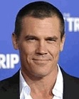
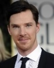
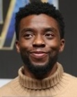
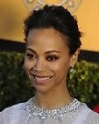
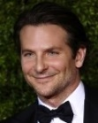
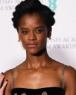
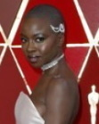

어벤져스 영화 시리즈의 4번째 작품. 마블 시네마틱 유니버스 페이즈 3의 10번째 작품이자 인피니티 사가의 22번째 작품. 그리고 인피니티 사가의 실질적인 마지막 작품이다.
엔드게임은 지난 11년 동안 함께해온 마블 팬들과 아이언맨에게 바치는 최대의 헌사인 작품이다. 작품 내에서 지속적이고 의도적으로 연출하는 오마쥬와 패러디는 팬들을 미소짓게 만들기 충분했고 아이언맨에게 바치는 영화속 연출 요소는 끝에가서 팬들의 심금을 울리기에 충분했다.
 |
 |
 |
 | |
|---|---|---|---|---|
| 조 루소 (감독) |
안소니 루소 (감독) |
로버트 다우니 주니어 (토니 스타크) |
조쉬 브롤린 (타노스) |
크리스 헴스워스 (토르) |
|  |  |
 |
 |
 |
|---|---|---|---|---|
| 베네딕트 컴버배치 (닥터 스트레인지) |
크리스 프랫 (피터 퀼) |
마크 러팔로 (브루스 배너) |
톰 홀랜드 (피터 파커) |
채드윅 보스만 (티 찰라) |
 |
 |
 |
 |
 |
|---|---|---|---|---|
| 크리스 에반스 (스티브 로저스) |
스칼렛 요한슨 (나타샤 로마노프) |
엘리자베스 올슨 (완다 막시모프) |
폴 베타니 (비전) |
조 샐다나 (가모라) |
 |
 |
 |
 | |
|---|---|---|---|---|
| 안소니 마키 (샘 윌슨) |
톰 히들스턴 (로키) |
돈 치들 (제임스 로드) |
브래들리 쿠퍼 (로켓) |
테리 노터리 (그루트) |
 |
 |
 |
 | |
|---|---|---|---|---|
| 데이브 바티스타 (드랙스) |
세바스찬 스탠 (버키 반즈) |
기네스 팰트로 (페퍼 포츠) |
폼 클레멘티에프 (맨티스) |
레티티아 라이트 (슈리) |
 |
 |
|||
|---|---|---|---|---|
| 브리 라슨 (캐럴 댄버스) |
테사 톰슨 (발키리) |
에반젤린 릴리 (호프 반 다인) |
틸다 스윈튼 (에인션트 원) |
존 파브로 (해피 호건) |
 |
 |  |
 |
 |
|---|---|---|---|---|
| 카렌 길런 (네뷸라) |
다나이 구리라 (오코예) |
베네딕트 웡 (웡) |
사무엘 L. 잭슨 (닉 퓨리) |
코비 스멀더스 (마리아 힐) |
모건 스타크 : I love you 3,000. (3000만큼 사랑해)
나타샤 로마노프 : See you in a minute. (좀 있다가 보자.)
스티브 로저스 : Hail Hydra.
스티브 로저스 : I can do this all day. Yeah, I kno! I know. (하루 종일도 할 수 있어. 아, 알아! 안다고.)
스티브 로저스 : That is America's ass. (이 정도는 돼야 캡틴 아메리카의 엉덩이지.)
팔콘 : On your Left.
스티브 로저스 : Avengers! …… Assemble.
타노스 : I'm inevitable. (나는 필연적인 존재다.)
토니 스타크 : And I…… am…… Iron Man. (그리고 나는... 아이언맨이다.)

마블 시네마틱 유니버스 페이즈3의 마지막 작품이며 인피니티 사가를 마무리하는 작품으로서 많은 오마주와 여러 원년 멤버들의 드라마, 그리고 결말까지 마블 팬들에게 많은 감동과 여운을 남겼다는 평이 대다수다.
올해는 집결의 해라고 봐도 될 정도 주연들의 단체 집결을 주제로 한 매체들이 많아지고 있는데, 특히 이 주제를 크게 대표하는 엔드 게임을 통해 마블 팬으로써는 어벤저스 단체 집결의 꿈이 현실로 이루어지게 됨으로써 팬들에게는 최대, 혹은 최후의 헌사가 아닐 수가 없다. 이 부분은 팬이 아니더래도 집결하는 것 자체 만큼은 모든 사람들을 하나로 뭉치게 만드는 최고의 장면이다. 과장되게 설명하자면, 두고두고 소장하게 될만한 가치로 평가되고 있으며, 이거 하나만으로도 단점을 퉁치게 만든다고 할 정도로 크게 호평하는 부분이다.

핑거 스냅 이슈를 통해 새로운 세계관이 펼쳐지고 있다는 사실은 파 프롬 홈부터 시작되어 알려졌지만, 엔드 게임에서는 과거를 다시 돌아와 새로운 미래를 창출하게 된다는 점을 유추했을 때 세계관이 자유롭게 커져가는 것은 사실상 엔드 게임을 기점으로 봐도 되는 것이 좋다. 한 영화 안에서 다량의 떡밥이 투척되었는데, 캡틴 마블의 행적이나 스파이더맨 : 파 프롬 홈의 내용, 또한 토르와 가디언즈 오브 갤럭시 뿐만이 아니라 남겨진 내용들이 상당히 많기 때문에 다시 봤을 때 계속 찾아볼 수 있는 요소들이 대부분 차기 후속작 뿐만 아니라 MCU 전체적으로 안정성 있게 후속작을 뽑을 수 있게 만드는 요소들을 정리해뒀다고 보면 된다.

훌륭한 OST로 초반에는 인피니티 워의 결말과 이어지는 듯한 어두운 분위기였다가 중후반부로 갈수록 많은 장르와 흥미진진한 음악들이 나온다. 특히 캡틴 아메리카가 타노스의 대군을 눈앞에 두고도 끝까지 맞서 싸우려는 장면에서 흘러나오는 음악은 엄청난 감동을 준다.
그리고 이번 영화의 메인 타이틀곡인 Portals는 웅장한 분위기와 함께 흘러나와 시너지를 주었으며 아이언맨의 장례식 OST인 The Real Hero 또한 잔잔한 감동을 준다.
또한 삽입곡들 또한 만만치 않으며, 캡틴 아메리카: 윈터 솔져 당시 닉 퓨리가 캡틴의 집에서 틀고 있었고 후에 엔드게임 에필로그에서 페기 카터와 함께 춤출 때 흘러나온 It's Been A Long, Long Time이라는 곡은 제2차 세계대전 이후 돌아온 장병들을 환영하는 곡이라는 점을 생각해 보았을 때, 21세기의 시간대에서 엄청난 스케일의 전쟁을 끝내고 제2차 세계대전 직후의 시간대로 돌아와 휴식을 취하는 캡틴과 매우 잘 어울린다. 그리고 스태프 롤에서 아이언맨 2의 엑스포 테마인 Make Way for Tomorrow Today라는 곡이 흘러나와 끝까지 아이언맨을 기렸다.

영화 러닝타임이 3시간으로 매우 길지만, 그만큼 담아낼 내용이 워낙 많다보니 자질구레한 것은 대충대충 처리하고 넘어가는 부분이 있어 관객들의 상상에 맡기는 부분이 많다. 대표적으로 전작을 인상깊게 관람했다면 "인피니티 워에서 계속해서 비춰졌던 헐크와 배너의 갈등은 대체 어떻게 해소되는 거지?!", "양자세계에 갇혀버린 앤트맨은 대체 어떤 방법으로, 누가 구해줘서 탈출하는 거지?!" 라고 가슴을 두근대며 기대할 관객들이 있었을 텐데, 정작 영화에서는 "두 번 패배하고 받은 충격으로 헐크를 대하는 태도가 바뀌고 감마선 요법을 통해 융합하였다", "지나가던 쥐가 버튼 눌러서 탈출했다" 식으로 연출상 간략하게 넘어간 부분도 있다.
공통적으로 의견이 분분한 것 중에 하나는 내용의 개연성인데, 이 문제를 대표로 뽑는다면 당연히 엔트맨을 5년뒤에 양자 영역에 빠져 나오게 도와준 한 쥐가 논란의 대상이었다. 이 쥐가 이 이야기를 이끌게 되는 마지막 기회의 시발점이었기 때문에 쥐 드립이 많이 오갔다. 특히 다시 포스터를 봤을 때 진 주인공이 하나 더 빠졌다거나, 1300년대만 해도 유럽의 절반을 앗아간 녀석이 후에 인류의 절반을 되살렸다는 아이러니함도 느꼈다는 등 상당한 드립들이 오갔다. 놀랍게도 한 유튜버가 과학적 근거로 확률을 따져봤을 때 5년내로 버튼을 작동시키는 확률이 오히려 더 높을 수도 있었다고 한다. 하지만 그 전에 차량은 어떻게 주차되었는지, 어떻게 이 특별하게 생긴 차량을 아무도 관심을 안 가졌는지에 대한 의문점들이 많았다.

액션씬이 질적인 면에선 떨어지진 않았으나 최종결전이라는 점에서 다소 부족한것이 아니냐 하는 의견이 많다. 물론 대부분의 런닝타임이 주인공들의 의미있는 시간여행과 원작,영화 팬들을 불문한 팬들의 헌사로 채워졌다는 점에서 이러한 부분을 크게 문제삼지 않는 관객들도 많지만 최종결전이라는걸 감안하면 다소 아쉬웠던것은 사실이다. 영웅들의 활약분배를 떠나 전투적인 면에서 활약이 거의 없다시피한 헐크 같은경우엔 어벤져스 1편을 생각하면 아울러 활약이 없긴 마찬가지인 전편 인피니티워도 생각해본다면 무척 빈약하다. 대개 원래부터도 마블세계관에서 영화마다 널뛰었던 파워인플레는 대다수가 그러려니 하는 문제지만 액션씬의 비중이라던지 밸런스 조절은 마지막 영화치곤 다소 성에 차지 않았다는것이 중론. 내용 측면에서 목표를 투자했지만, 그만큼 빠진 액션씬에 대해선 기대 이하가 될 수도 있다.

최종 전투 때 건틀렛을 전달하는 과정에서 등장한 부자연스러운 정치적 올바름도 지적받고 있다. 페미니즘을 의식한 것인지 주연과 조연을 가리지 않고 여성만이 집결하는데, 상황에 맞지 않게 상당히 부자연스러운 연출이라는 평가. 스파이더맨이 건틀렛을 가지고 있자 캡틴 마블이 이제 자신에게 맡기라고 하였다. 그와 함께 모든 여자 히어로(페퍼, 스칼렛 위치, 발키리 등등)들이 나왔다. 캡틴 마블을 공개하기 전에 앞서 "캡틴 마블이 모든 여성을 대변하지는 않으며 그보다는 입체적이고 구체적인 캐릭터를 구축하는 것이 더 중요하다." 라고 말한 것이 마블 스튜디오의 입장이었던만큼 이러한 연출은 다소 아쉬움이 남을만한 부분. 거기다 그 넓은 전쟁터에서, 곳곳에서 영웅들이 처절하게 싸우는 와중에, 여성 영웅들만, 그것도 한두 명이 아닌 십수 명이 한곳에 모여 폼을 잡고 있다는게 작위적이다. 게다가 해당 장면은 캡틴 마블이 적들을 뚫고 가는 것이 힘들어서 여성 영웅들만이 등장해 도와준다는 연출인데, 자유자재로 비행 가능한 캡틴 마블이 그런 일에 도움이 필요하다는 전개도 역시 작위적인 연출이라고 볼 수 있다."단 피터가 어린 10대 청소년라는점을 감안해야한다는 것도 있다. 삶과 목숨이 왔다갔다하는 위험한 곳에서 어린 청소년이 있다면 보호본능이 일어나는건 이상할리가 없다."
엔드게임은 다른 MCU 영화들의 것과 같은 포맷의 쿠키 영상은 없다. 그래서 많은 영화관들이 쿠키 영상이 없다고 사전 알림판을 배치했으며, 직원들이 남아있는 관객들에게 직접 말해준 사례도 있다.
역대 MCU 조연 및 주연 배우들의 이름을 맡은 캐릭터의 장면들과 함께 보여준다. 특히 마지막에 배치된 어벤져스 원년 멤버 6명의 이름은 배우들의 친필 싸인도 함께 보여준다. 지난 10여년 동안 마블 시리즈를 있게 해준 이들 주역 배우에 대한 경의를 나타내 감동적이라는 호평을 받았다.
마블 스튜디오 로고와 함께 여섯 번의 쇠 부딪치는 소리를 들려준다. 이는 아이언맨 1편에 나온 장면으로, 첫번째부터 다섯번째까지는 토니가 Mk. 1의 머리 파츠를 망치질하는 소리고 마지막 여섯번째는 완성한 머리 파츠를 테이블 위에 놓는 소리. MCU의 시작을 상징한다.
로고 후에는 "~는 (~에서) 돌아온다" 같은 문구 없이 바로 월트 디즈니 모션 픽쳐스의 로고가 뜨고 끝. 인피니티 사가를 마무리하는 작품이기에 MCU는 계속 이어지지만 인피니티 사가는 확실히 끝났음을 못박으려고 쿠키 영상도 예고 문구도 넣지 않은 것으로 여겨진다.
루소 형제의 인터뷰에 따르면 쿠키 영상을 넣지 않은 이유는 이 영화가 그동안의 시리즈를 마무리하는 최종장이며, 이후 새로운 이야기가 시작되기 때문이다.